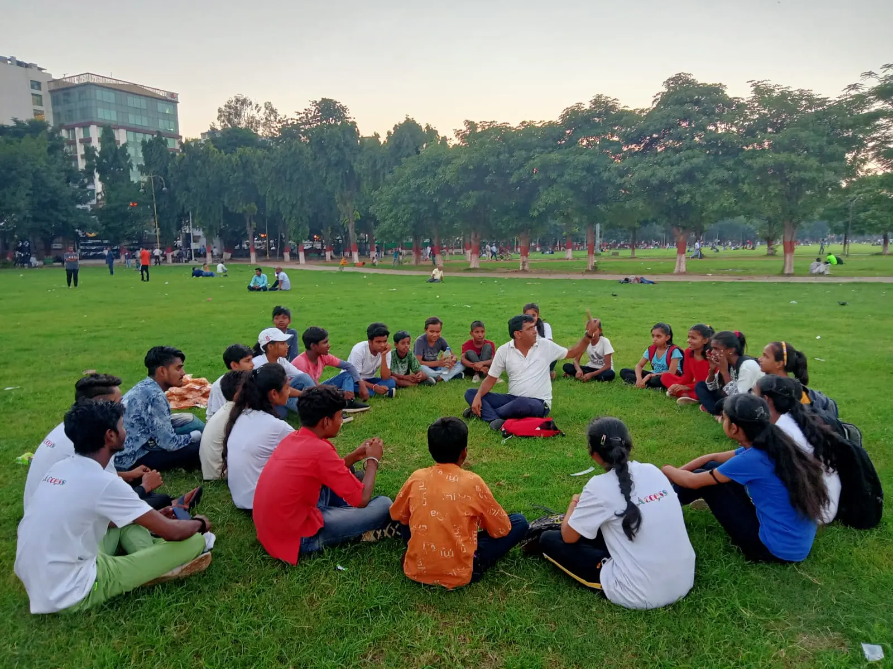
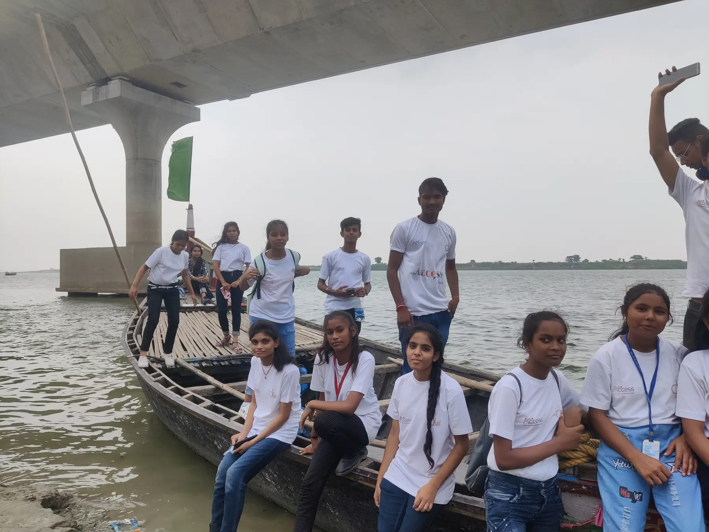
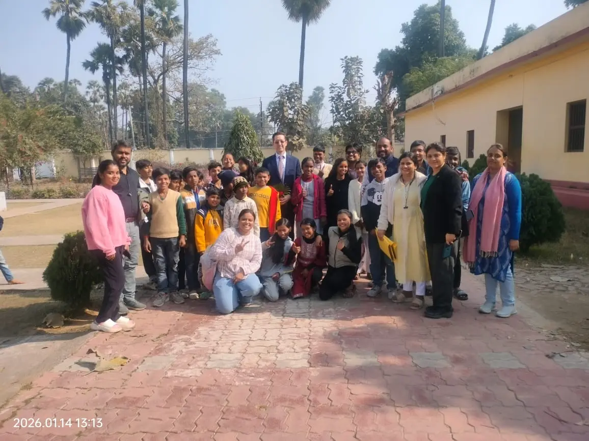

Use English for real work
Students read news, held group discussions and learnt to write formal emails, prepare a CV and speak in an interview.
Patna · Two chapters · 2020–2028
Young people come to improve their English. Soon they are using it to question an argument, present an idea, rehearse a play or speak to someone new.
Diksha first ran Access with 50 young people in Patna. Now a second chapter is beginning with 50 first-year STEM students at NIT Patna. The setting has changed. The belief has not: a language becomes useful when a learner has something of their own to say.
Begin with the first cohort
The first chapter · 2020–2023
Classes started in September 2020, while students and teachers were finding their way through the pandemic. Access began online and later moved into shared rooms, public events and travel. Two groups of 25 stayed with the programme through its full learning journey.
Students read news, held group discussions and learnt to write formal emails, prepare a CV and speak in an interview.
Film, debate and conversation opened questions about media, gender, inclusion, identity and the differences between Indian and American life.
Theatre, photography, filmmaking, poetry, music and presentations gave students a reason to practise until the words felt like their own.
An intensive visit to Kolkata and Santiniketan brought language together with art, history, theatre, teamwork and conversations in unfamiliar places.

What remained
The first cohort ended with a closing event planned and performed by the students themselves. A play, poetry, music, film and even the story of learning on Zoom became part of how they showed the journey to their families.
The cohort’s average moved upward between the initial and exit assessments. All 50 students completed the programme.
Three Access participants came back as weekly volunteers, sharing dance, music and craft with younger children.
Two participants later continued their education through the U.S. Community College Initiative Program.
What the new cohort will do
These are programme commitments, not results already claimed. Student projects and reflections will be added here as the cohort begins and the work takes shape.
Turn a scientific or technical idea into English that another person can question, understand and use.
Work in teams on applied projects and an innovation challenge, including the programme hackathon.
Practise technical presentations, receive feedback and prepare a capstone that can stand before a public audience.
Meet educators and professionals, take part in community work and become familiar with U.S. academic communication.

The partnership
Diksha stays close to the students. The partnership brings in the people, curriculum and experiences that make their world larger.
The first chapter was implemented by Diksha Foundation with the U.S. Consulate General Kolkata and RELO India. The new chapter is the U.S. Department of State’s English Access Program, an initiative of the United States Embassy/Consulate General in India. It is implemented by Diksha, hosted at NIT Patna and shaped within the U.S.–India TRUST framework.
One programme, two chapters
The first cohort showed us what young people can do when English is attached to real work. The NIT chapter carries that lesson into technical education.
September 2020
Fifty young people start learning online during the pandemic.
March 2023
They plan and lead the final event through theatre, poetry, music and film.
September 2026
Fifty first-year STEM students begin 200 hours of project-based English learning.
March 2028
Students bring their communication, project and capstone work together.
The next cohort
We will add their projects, reflections and capstone work to this page as the programme unfolds.